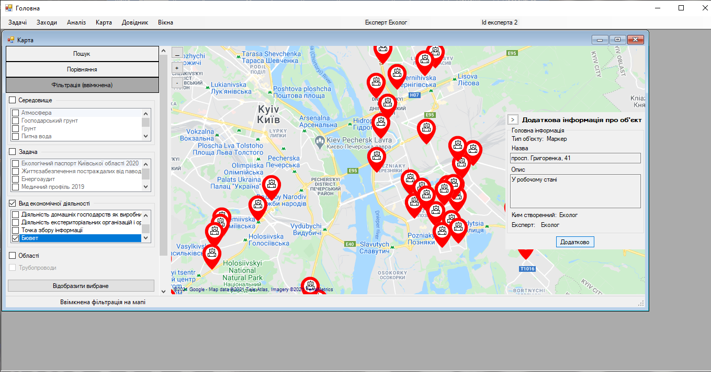

Крок 7. Відкриття вікна додаткової інформації про маркер
Експерт натискає на маркер лівою кнопкою миші і тоді на карті з’являється контекстне вікно додаткової інформації. Наразі необхідно відредагувати прив’язку маркера, тому експерт натискає кнопку «Додатково».
